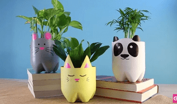

{kind=link}

Vas Bunga Botol Bekas
Sampah seperti botol bekas adalah salah satu sampah yang tidak pernah terurai,selain itu botol bekas juga dapat merusak lingkungan.Maka dari itu kita harus mengelola botol plastik menjadi sesuatu yang menghasilkan keuntungan. tujuan kami membuat kerajinan ini adalah mengurangi sampah botol plastik yang semakin banyak di lingkungan sekitar kita dengan adanya ide ini maka dapat mengurangi pencemaran lingkungan.
Alat:
Botol plastik bekas (ukuran sesuai kebutuhan)
Gunting atau cutter
Paku atau bor (untuk membuat lubang drainase)
Kuas
Spidol (untuk menggambar pola)
Peralatan tambahan (opsional): pisau, amplas, lem, dll.
Bahan:
Cat akrilik (berbagai warna)
Media tanam (tanah, sekam, pupuk, dll.)
Tanaman hias
Tali (untuk pot gantung)
Hiasan tambahan (opsional): kancing, manik-manik, dll.
Cara Pembuatan:
- Persiapan Botol: Bersihkan botol bekas dan lepaskan labelnya.
Potong bagian atas botol sesuai desain yang diinginkan (pot biasa atau pot gantung).
- Pembuatan Lubang Drainase: Buat lubang di bagian bawah botol menggunakan paku atau bor untuk
mencegah air menggenang.
- Pewarnaan dan Hiasan: Warnai botol dengan cat akrilik sesuai selera.
Bisa juga ditambahkan gambar atau pola menggunakan spidol atau cat.
- Pemasangan Tali (untuk pot gantung): Jika membuat pot gantung, buat lubang di bagian
sisi botol untuk memasang tali.
- Pengisian Media Tanam: Masukkan media tanam ke dalam pot yang sudah dihias.
- Penanaman: Tanam tanaman hias kesukaan Anda di dalam pot.
- Penempatan: Pot siap digantung atau diletakkan di tempat yang diinginkan.
{kind=link}
{kind=link}
{kind=link}